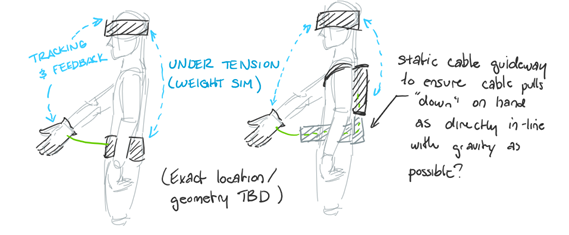
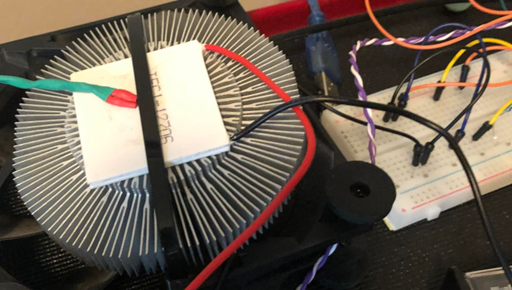
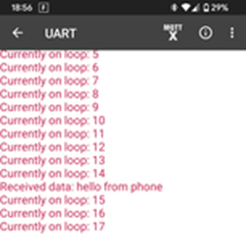

ThermoForce: State of the Project – October 2021
Project Progress - October 2021
The start of October focused on finalizing the working design for the glove: this resulted in the design we see know, resistive heaters, a Peltier plate for cooling, motor and cable for weight feedback, a glove to attach components to, and using an IR hand tracker for game inputs. Based on the selected final design, patent research was performed to see if any patent infringement would occur if this project was to be taken public. The rest of the activities this month focused on research into the specific project areas (temperature and weight feedback, glove design, and software requirements), possible feasible designs, and basic prototyping/proof-of-concepts. Several course deliverables were also due this month.


Temperature Feedback Development
Temperature feedback activities focused on ordering flexible resistive heaters, and on simple cooling proof-of-concept using Arduino PWM, a Peltier plate, and thermistors to measure temperature.

Weight Feedback Development
Weight feedback activities for early October were focused on motor power requirement calculations based on the desired weight feedback range (0-10Kg), so a motor could be ordered. With a motor ordered, the Arduino Motor Shield Rev3 was selected as a motor controller, and preliminary coding began on motor control. Additionally, since closed loop feedback is desired, a loadcell to measure force and shunt resistor + ADC (Analog to Digital Converter) combo was ordered to be able to measure relevant system parameters.
Glove Design Development
Glove design for October focused on research into fabrics and their associated thermal properties. It was found that natural fibres were generally more thermally conductive than synthetic ones. This, and the fact that synthetic fibres tend to melt when heated, mean natural fibres like cotton will be used in the gloves design. Additional research/testing was done into metal-infused fabric to see if they achieved better thermal conductivity than pure fibres. The testing was inconclusive and due to the cost of the infused fabric we decided not to use it.
Software Development
Software development for October was limited, as final design decisions were still being made. A GitHub repository for software (Unity VR and Arduino sketches) was created, and the development environment for unity setup. Additionally, on the Arduino side a Bluetooth module was ordered and connected, and a proof of concept was completed show BLE (Bluetooth Low Energy) could be used as a means wireless communications between a computer and feedback controller (Arduino).
